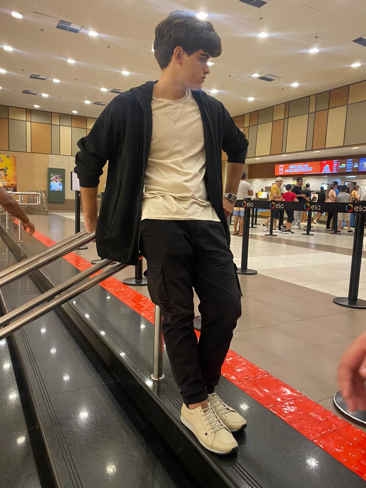

Bruno Ramon
- Criador da Etheris Game Studios;
- Desenvolvedor de jogos;
- Desenvolvedor Web.
- Criador da Etheris Game Studios;
- Desenvolvedor de jogos;
- Desenvolvedor Web.
Olá! meu nome é Bruno, sou um programador e desenvolvedor brasileiro nascido no Rio Grande do Norte. desde cedo tive um profundo interesse por programação e computação, era fascinado pela ideia de desenvolver algo avançado com minhas próprias mãos, o que me levou a estudar ferramentas de IA, linguagens diversas, ferramentas de design, modelagem e criação de software.
C#
Blender
Unity
Controle de versão
Design
Manutenção
HTML, CSS e JS
Potigol

Locks 'n' Leaps é um jogo sobre uma cobrinha e uma caixa com pernas lutando contra ratos para recuperar suas coisas. o "LnL" foi o primeiro jogo desenvolvido após a formação da Etheris Game Studios. o jogo receberá atualizações em breve.

Asteroids++ Remake é um jogo que eu desenvolvi sozinho em 4 horas ao vivo no meu canal do YouTube no começo da minha jornada do desenvolvimento de jogos usando o Game Maker studio 2 o jogo é uma recriação do Asteroids de Atari com alguns recursos a mais.

Eco Rush foi o meu primeiro jogo já desenvolvido. O jogo consistia em fazer boas escolhas, educação financeira e consumismo. Jogo feito para a defesa do meu TCC em 2022 no curso de tecnologia da informação do CEEP Profª Lourdinha Guerra.
Me acompanhe em um ambiente mais pessoal e sincero. 🫱🏻🫲🏻